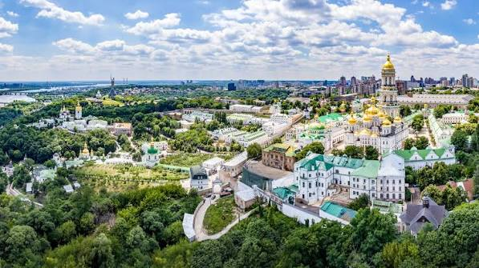

Загальна характеристика

Київ — столиця та найбільше місто України, розташоване на мальовничих берегах річки Дніпро. Це один із найстаріших історичних і культурних центрів Східної Європи.
Чому я обрав це місто
Київ — це місто неймовірної енергетики та контрастів. Тут можна прогулюватися затишними історичними вуличками Подолу, насолоджуватися тишею численних парків і водночас відчувати динаміку сучасного європейського мегаполіса.
Цікаві факти про Київ
- Станція метро «Арсенальна» є однією з найглибших у світі (105,5 метрів під землею).
- Головна вулиця міста — Хрещатик — є однією з найкоротших головних столичних вулиць у світі (лише 1,3 км), але водночас дуже широкою.
- Київ вважається одним із найзеленіших міст Європи завдяки величезній кількості парків та скверів.
Визначні місця, які варто відвідати
- Софійський собор (пам'ятка всесвітньої спадщини ЮНЕСКО XI століття).
- Андріївський узвіз та Андріївська церква.
- Золоті ворота та Володимирська гірка з пішохідно-велосипедним мостом.
- Національний ботанічний сад імені М. М. Гришка.
Особиста оцінка та додаткові ресурси
Моя оцінка: 10 / 10
Дізнатися більше про історію та пам'ятки міста можна на зовнішньому ресурсі: Київ у Вікіпедії.